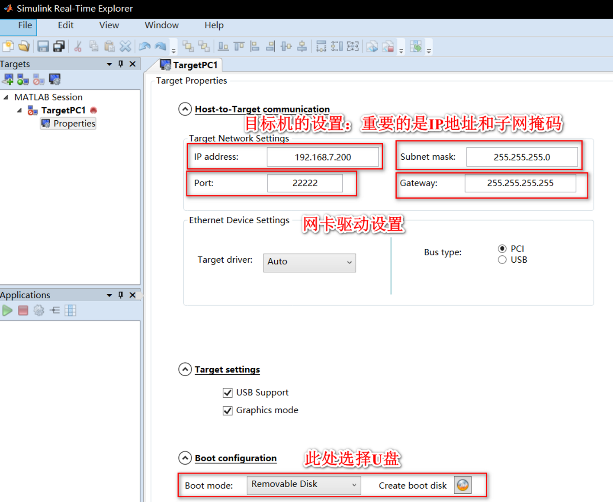
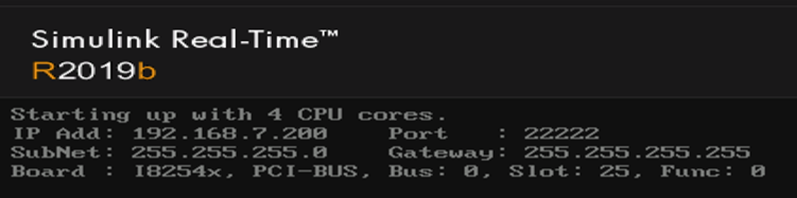
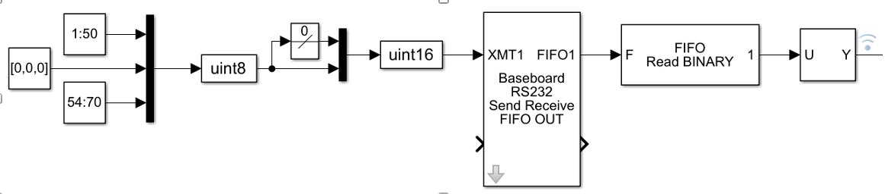
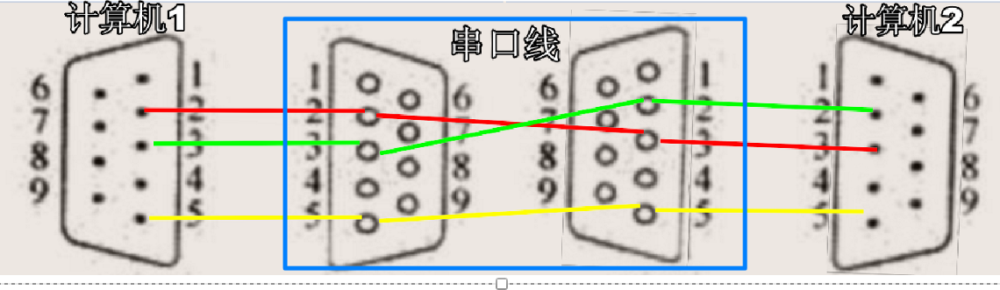

Simulink实时仿真
xPC
介绍
Matlab提供了实时仿真的方式xPC，xPC系统提供了一种价格低廉、性能较高且方便的实时仿真系统，其采用了宿主机-目标机的技术实现途径。宿主机搭建Simulink模型，并通过RTW和VC编译器编译为C语言驱动的可执行文件，下载到目标机中运行。目标机仅使用U盘驱动便可转变为一个实时操作系统，即Simulink Real-Time的实时操作系统，一方面C代码的运行速度快，大大加快模型运行的速度，另一方面实时操作系统可以保证仿真任务的实时性。在运行期间，可以实时调整模型参数，同时仿真的数据通过网线传到宿主机中，可以在宿主机中实时查看，非常方便调试。
操作流程
本文使用Matlab的版本为R2019b，为了搭建基于xPC的实时仿真系统，需要进行如下操作：
第一步制作启动U盘，要求目标机与宿主机在同一网段；
matlab命令行：slrtexplr
properties：IP，Port；Boot Mode：Removable Disk
注意上位机与下位机IP前三位相同————即在同一网段
create boot disk——到目标优盘
会有两个文件生成BOOTSECT.RTT和xpmtgb.RTA
第二步目标机使用U盘启动，并使用网线连接宿主机与目标机，此时在宿主机可以与目标机ping通；
ping通
SimulinkRealTime.target 检查连接状态
第三步在宿主机将Simulink代码编译为C语言驱动的可执行文件，执行该文件，即将C程序下载到目标机中；
- simulink 2019b、VS2017；simulink 2017b之后版本减少了很多驱动，2020b中需要在APPdesign中设计界面
1
2Code Generation:
System target file: slrt.tlcsimulink模型在目标机build、Run，会生成mldatx文件

第四步在宿主机的Real-Time Explorer应用中控制目标机的启动，修改参数等，即可完成仿真。
- 同步下位机的界面：tg = slrt; viewTargetScreen(tg)；
如下图为目标机的信息，目标机有4个处理核心，其网络端口号为192.168.7.200，它与宿主机网口192.168.7.100在同一网段。

串口通信
文件格式
文件保存类型：https://blog.csdn.net/anbaixiu/article/details/77123759
ASCII文件也称为文本文件，这种文件在磁盘中存放时每个字符对应一个字节，用于存放对应的ASCII码。例如，数5678的存储形式为：
1
2ASCII码： 00110101 00110110 00110111 00111000
十进制码： 5 6 7 8共占用4个字节。ASCII码文件可在屏幕上按字符显示， 例如源程序文件就是ASCII文件，用DOS命令TYPE可显示文件的内容。 由于是按字符显示，因此能读懂文件内容。
二进制文件是按二进制的编码方式来存放文件的。 例如， 数5678的存储形式为：
1
二进制码：00010110 00101110只占二个字节
二进制文件虽然也可在屏幕上显示， 但其内容无法读懂。C系统在处理这些文件时，并不区分类型，都看成是字符流，按字节进行处理。 输入输出字符流的开始和结束只由程序控制而不受物理符号(如回车符)的控制。 因此也把这种文件称作“流式文件”。
二进制文件虽然也可在屏幕上显示， 但其内容无法读懂。C系统在处理这些文件时，并不区分类型，都看成是字符流，按字节进行处理。 输入输出字符流的开始和结束只由程序控制而不受物理符号(如回车符)的控制。 因此也把这种文件称作“流式文件”。
区别
一个文件可以以文本模式或二进制模式打开，这两种的区别是：在文本模式中一个文件可以以文本模式或二进制模式打开，这两种的区别是：在文本模式中回车被当成一个字符’/n’，而二进制模式认为它是两个字符0x0D,0x0A；如果在文件中读到0x1B，文本模式会认为这是文件结束符，也就是二进制模型不会对文件进行处理，而文本方式会按一定的方式对数据作相应的转换。
两者区别在于回车换行的处理，BINARY不对文件做任何处理，ASCII会把回车换行转化为本机的回车字符，而不同操作系统回车字符是不同的。
目标机与飞控RS232连接
使用simulink中的RS232 Baseboard Serial/Baseboard Serial F时，uint8为ASCII码格式，文字会经过一定的转化，终止位为0(NULL)，uint16为binary格式，需要指定数据量的大小
1 | 数据发送： |
最终方案

RS232 Baseboard Serial F设置一个串口1，XMT1为发送数据到串口1，FIFO1为接收串口的缓冲区
Basic Setup中，波特率、初始位、终止位设置与协议相同。Hardware FIFO为硬件FIFO，其深度定义大，可以储存的数据多，其深度定义小，速度快，对硬件要求小。FIFO的最小深度就等于没有被读走的数据个数。receive fifo interrupt level代表硬件寄存器的中断，即硬件接收器在1/4满或半满或几乎全满时中断接收数据。
FIFO setup中，定义了软件FIFO的大小，即接收端和发送端的FIFO缓冲区大小，为了保证数据传输，通常设置大一些（官方文档：Setting it to several times the number of characters is quite adequate），实际设置值特别大。transmit为发送，receive为接收。
1.数据发送
数据按协议编码后按uint8打包，并在包头加数组的宽度
通过mux之后，转为uint16，发送到RS232 Baseboard Serial F，RS232 Baseboard Serial F数据类型为(count+16 bits uint)
2.数据接收
通过RS232 Baseboard Serial F接收到硬件FIFO的数据
通过FIFO Read binary二进制读取数据，为了防止丢包之后的乱包，设置包头为{char([235])}【即AA】，并读取包括AA的19个数据。此时会输出20个数据——包括一个终止表示符0。并设置Hold last output if no new data，若设置Zero output if no new data，则无数据时，输出第一个字符为0。
使用selecter选择前19个数，之后按协议解码即可。
RS232 Baseboard Serial F
1.数据写入
按格式接收数据，写入软件FIFO缓冲区（D→F）【按格式设置写入】【推测此处进行了数据转换，根据数据的实际值写为2进制】，通过FIFO read将数据按次序编为32bits【推测为打包的方式】，通过write HW FIFO写入硬件FIFO。【推测转换原因为simulink real time内核为32bits—4Byte】
2.数据读出
通过read HW FIFO读取硬件FIFO中的数据，同样按照【count+uint32】接收到软件FIFO缓冲区。之后从软件FIFO中按实际的数据格式接收即可。
3.数据包大小
发送一个包的时间=（数据量*数据格式）/波特率
如，KT发送的数据包：70个uint8转为uint16发送（格式需要）
T = (70*16)/115200 = 9.72ms
此时，若使用仿真步长为5ms，包将不会成功发送，全部堆积到FIFO中，时间越长堆积越多。现象为：接收到数据延迟很高，约3s以上。若设置仿真步长为10ms，数据发送流畅。
串口RS232
接口定义：https://blog.csdn.net/zhenguo26/article/details/84064573
使用方式定义： https://blog.csdn.net/huangkangying/article/details/8070945
| 9针串口（DB9） | 25针串口（DB25） | ||
|---|---|---|---|
| 针号功能说明 | 缩写 | 针号功能说明 | 缩写 |
| 1数据载波检测 | DCD | 8 | 数据载波检测 |
| 2接收数据 | RXD | 3 | 接收数据 |
| 3发送数据 | TXD | 2 | 发送数据 |
| 4数据终端准备 | DTR | 20 | 数据终端准备 |
| 5信号地 | GND | 7 | 信号地 |
| 6数据设备准备好 | DSR | 6 | 数据准备好 |
| 7请求发送 | RTS | 4 | 请求发送 |
| 8清除发送 | CTS | 5 | 清除发送 |
| 9振铃指示 | DELL | 22 | 振铃指示 |

接flightgear
UDP通过网线直达，地址写主机地址【127.0.0.1不可用】